「專訪」收藏每幀輕奢慢活場景！林口 70 坪美式退休宅

無論室內風格如何流轉萬千，總有一派人始終堅守自我格調，在這當中，美式風格即是不隨時間褪色的雋永存在，一如本案夫妻在積累許多歐美旅行的閱歷後，對於美式生活情境懷有美好憧憬。
於是在構思未來退休生活時，不假思索地找上專精於美式風格的 元典設計 實踐心中理想，從格局、建材、顏色再到細微的軟裝佈置，細觀每一處角落均蘊藏著道地風情，如同一件量身裁製的訂製服，既合身也合乎品味。

Q：本案的設計主軸與重點？
一應俱全的家具軟件搭配，是本案夫妻倆的主要訴求，於是依照所望將格局調整、透過客製化調佐專屬色調，也分別根據理想生活場景點綴家具家飾，以奢雅大器當作主題，從沙發、茶几、掛鐘、燈飾再至角落的藝術鏡，經由外型張力、金屬調性，逐步圍塑起一式到位的高雅格調。
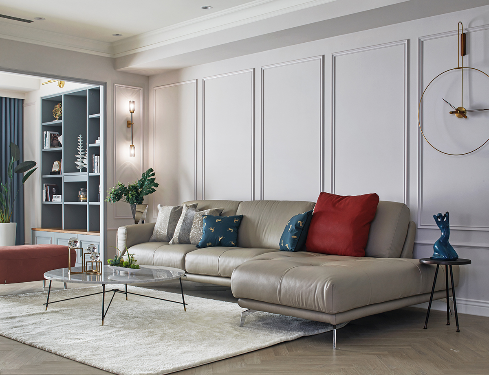
Q：小坪數若想擁有美式風格，必須掌握哪些要素？
無論坪數大小，格局、材質細節與用色搭配都是必不可少的要素，舉例來說，開闊通透是歐美常見的空間佈局，因此可採用玻璃隔間創造穿透感受，敞開寬敞明亮的生活視野。
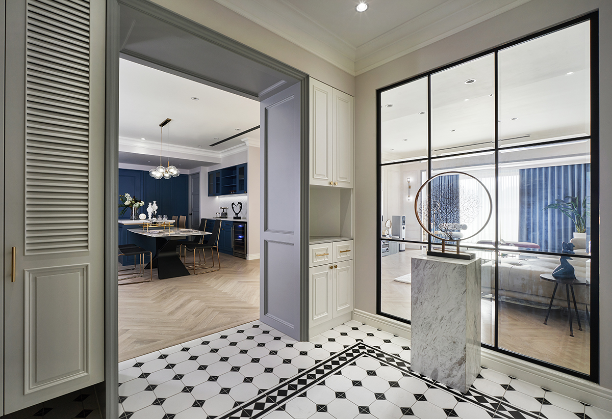
色彩方面，以摻揉灰調的低彩度與低明度為主，透過高包容度的顏色當做基底，柔和襯托著空間的各項元素，使五金、燈飾、家具家飾、軟裝配件與建材協調相融，細膩堆疊出獨有情境式美學。
個案基本資料
新北林口 / 新成屋 / 電梯大樓 / 室內 70 坪 / 格局 3 房 2 廳 3 衛 / 居住人數 4 大
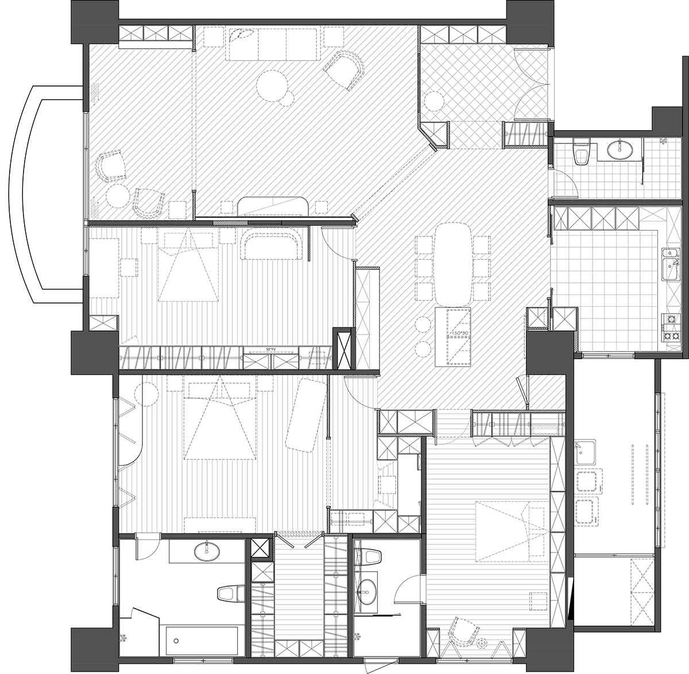
< 需求 >
・ 指定美式風格
・ 希望放大玄關尺度
・ 全方位策劃家具、燈具與軟件的佈置
< 各別空間 >
1. 玄關設計：
宛若翻開歐美生活雜誌的醉心扉頁，一抹輕柔微光透窗漫流傾瀉，揭開了屬於美式風格的優雅序幕，將玄關尺度按照所好調整擴闊，利用經典線框與格子窗框起一幅流動光景，仔細收藏家中每一場景，以無瑕凈化一切紛擾喧囂。
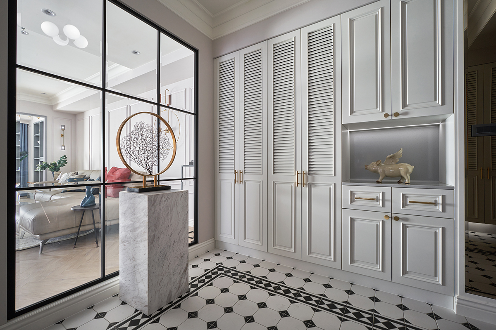
逐光向前，英式黑白棋盤格地磚散發著典雅氣息，接著沿牆齊平一道柔白玄關櫃與鞋櫃，揉入經典百葉元素平衡美學機能，對向則以對稱手法砌就成雙衣物櫃，協調空間的水平軸心，綻放獨有奢雅大器韻味。

2. 餐廳設計：
沿著輕淺橡木地坪漫步入室，蘊藏濃郁古典風情的人字拼脈絡，在斜向交錯間帶出空間指向性，將四周立面悉心梳理調配，以典雅飾板撫平通往女兒房的門框線條，佐配霧灰藍色澤築起一幀優雅餐敘光景。
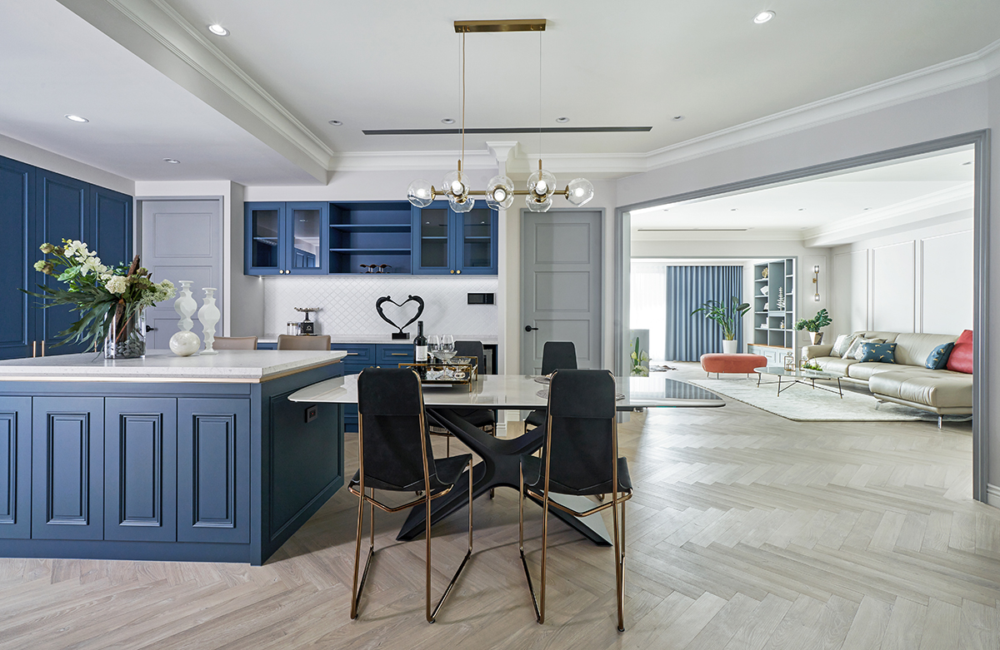
深度剖析日常習慣後，將霧灰藍飾板蔓延成一座酒水櫃，相佐白葫蘆壁磚輕盈份量，使清晨的咖啡香氣、深夜裡的小酌微醺氣息，時時縈繞其中，立面則輕裹溫甜奶茶色系，柔化光影銳感、沁出漸層色暈，一股溫婉柔美氣息油然生成。
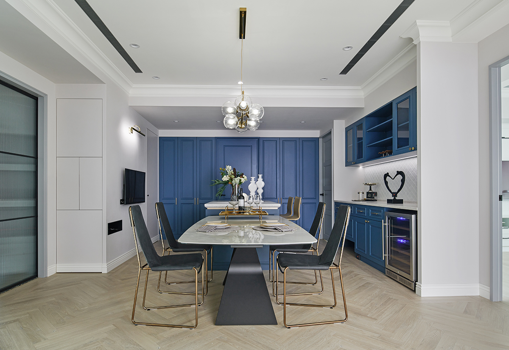
同步砌築一方中島櫃，貼近偶爾調製輕食的景況，也能充分拓增出寬裕席位，接著落下一道鐵件玻璃滑門形成輕透介質，杜絕料理時的油煙溢散問題，敞開了寬廣視野，相繼推出一座食材備品櫃，無形中擴增充裕收納機能。
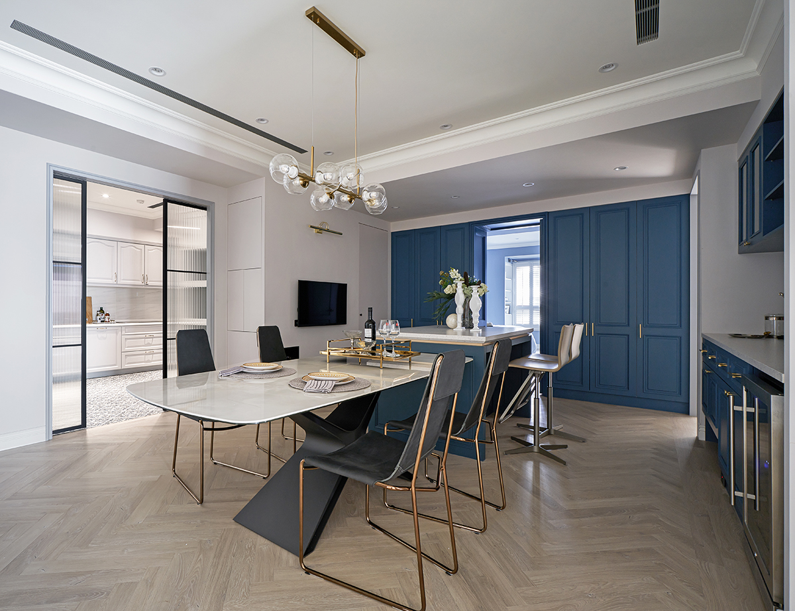
3. 廚房設計：
一席手繪感的藝術花磚主張著道地歐美基因，宛若置身當地的料理情境即刻成形，接著採用有著柔弧刻溝線條的飾板、沿著空間輪廓築起一道 L 型廚具，依據使用習慣依序定位機能，從乾貨架、電器櫃再到量身裁製一道對開門，使全嵌式冰箱悄然隱沒，高雅格調從此顯影。
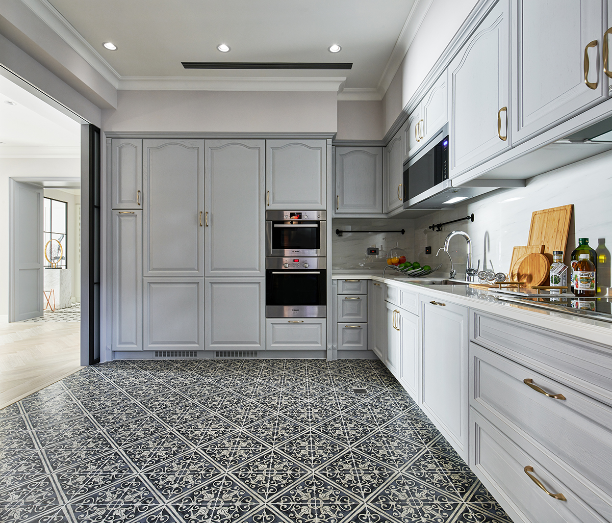
4. 客廳設計：
空間的高度連貫性，是美式風格必然著墨的要點，將原本 90 度的生硬連結微幅調移，以 45 度斜向開口強化場域關係，綴以ㄇ字型飾板門框劃開柔性分線，界而不分地串起客廳與餐廳，敞開漫無止境的闊綽視域。
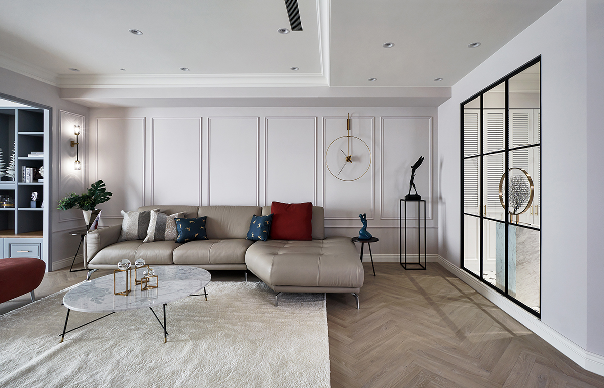
將淡雅奶茶色調持續蔓延，渲染出溫和柔潤的生活氛圍，佐以簡約線板式樣築起純淨框架，恰似一方陳列平台，穩穩烘襯著每一件悉心揀選的家具飾品，同步依據原有的落地音響裁定矮櫃尺度，揉入格柵語彙增添優雅細節。
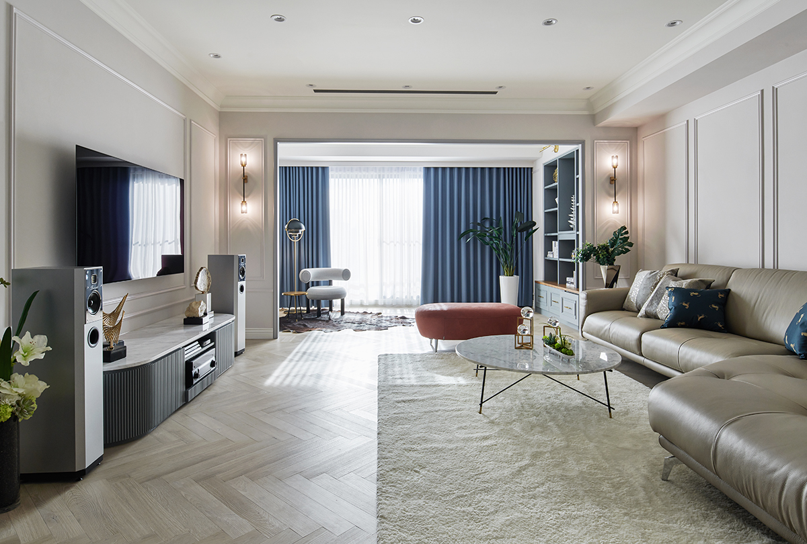
導入一框一景的設計手法，透過線框與金屬壁燈梳理分明次序，迎著窗光闢出一隅起居境地，接續沿著柱深嵌入開放格櫃，使蒐藏擺件、旅行紀念品與書本有序歸整，在柔光籠罩下，幽幽品嚐一份茶點或品讀一本書，感受自在悠閒步調。
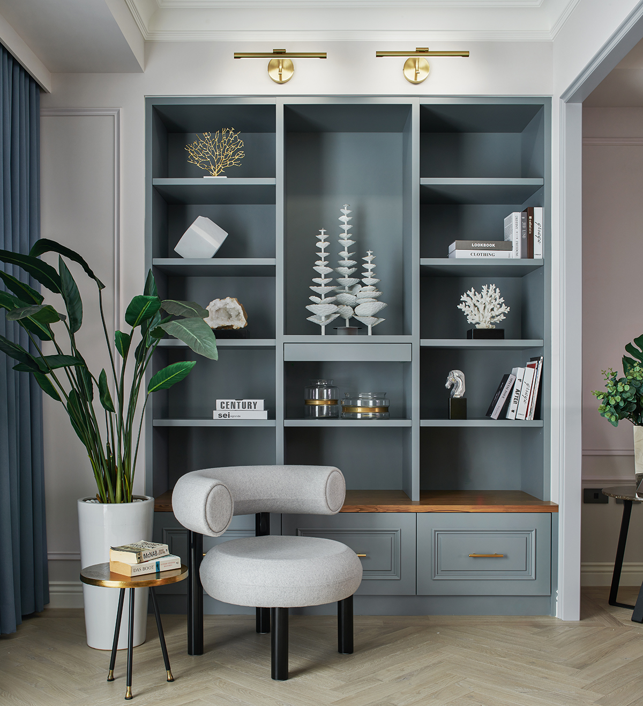
5. 主臥室設計：
不似常見的寢室格局，將梳化間落定成第一站，以層層遞進的動線編排，使休眠場所退居其後、不再被唐突視線干擾，同步增闢一間步入式衣帽間，移植經典雙開門設計，並揉入百葉細節堆疊古典柔美韻味，促成良好的循環氣流。
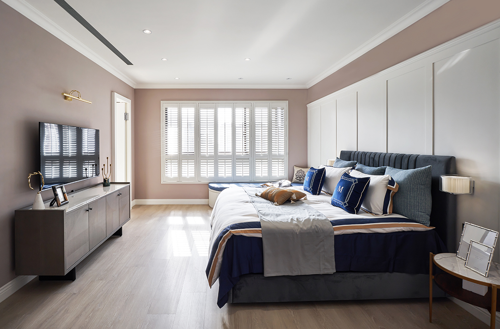
將各場域分別獨立設置，使休憩區少去不必要的陳設元素，調理出純粹無雜的舒心視野，接續將壁面抹上輕柔藕粉色澤，相映著純白線板烘襯出溫煦典雅情境，使睡眠時光有著輕緩無壓的感受。
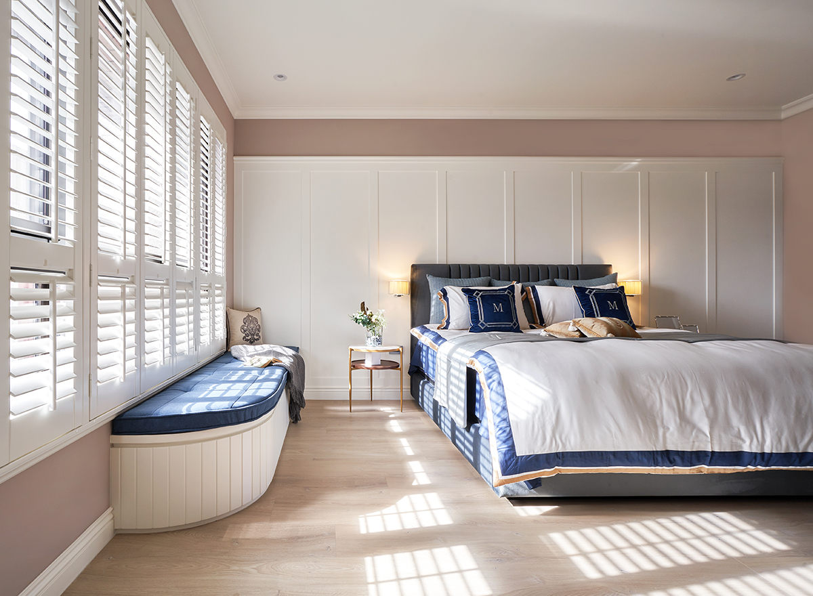
細節上，於窗框挹注實木百葉窗作為潤飾，也能自由調節適切的進光量，將充沛日光篩濾成了一縷縷流光碎影，使室內浸潤於一片柔光之中，依隨著窗光砌一道柔弧臥榻，伴著和暖光線度過悠閒片刻。
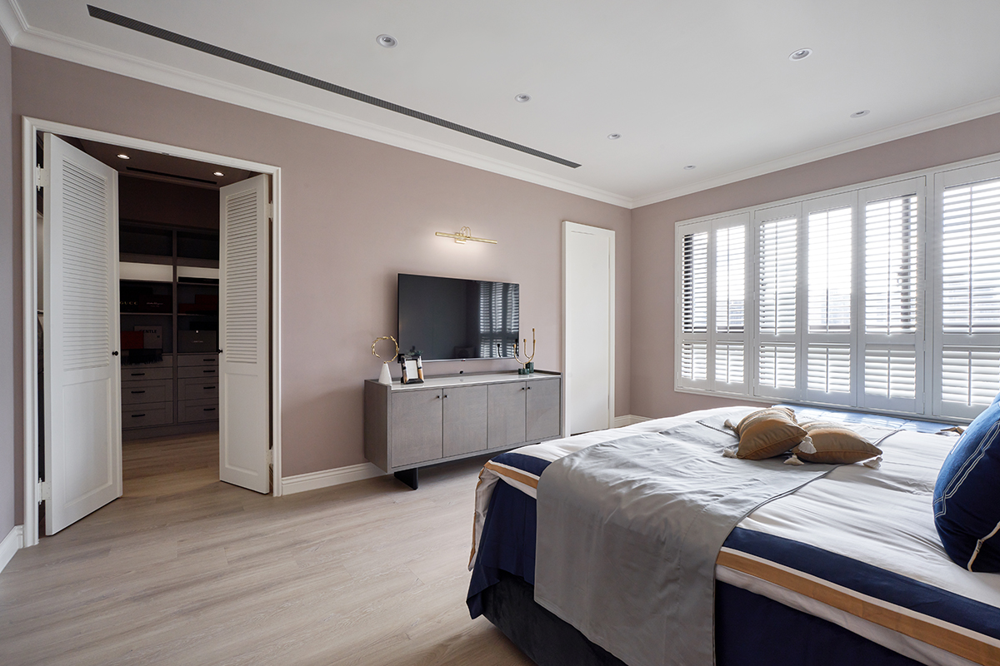
6. 兒子房設計：
純淨明亮，是兒子對於自身領地的由衷渴盼，於是將輕淺奶茶色調漫流入室，烘托簡淨卻不失溫度的休眠場景，接續於床前相佐一道純白裝飾背板，勾勒出毫無紛擾的清爽視野，凝視對向則依循結構凹槽推出一道平整壁櫃。
沿著立面將機能按照次序投放，在高低錯落之間，同步整合衣物櫃與電視牆，輔以柔白色調淡化量體份量感，同時不浪費絲毫角落，將柱體微幅拓增寬度，於側邊嵌合一道開放格櫃，降低視覺干預卻能補足收納機能。
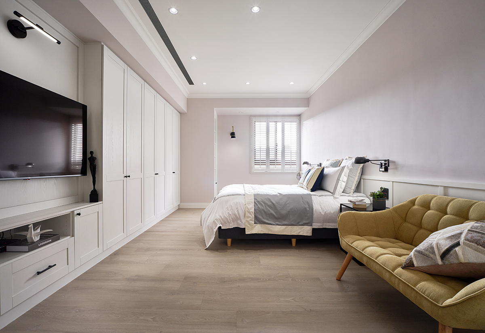
7. 女兒房設計：
悉心審視格局條件後，將收納櫃體沿著床前一展而開，輕巧退開壓樑問題，也使主要動線平順流暢，接續將壁櫃挹注對稱式手法，使書桌與衣物矮櫃各據一方，中段則化成床頭背板，經由不同線段幅寬定義各自屬性。
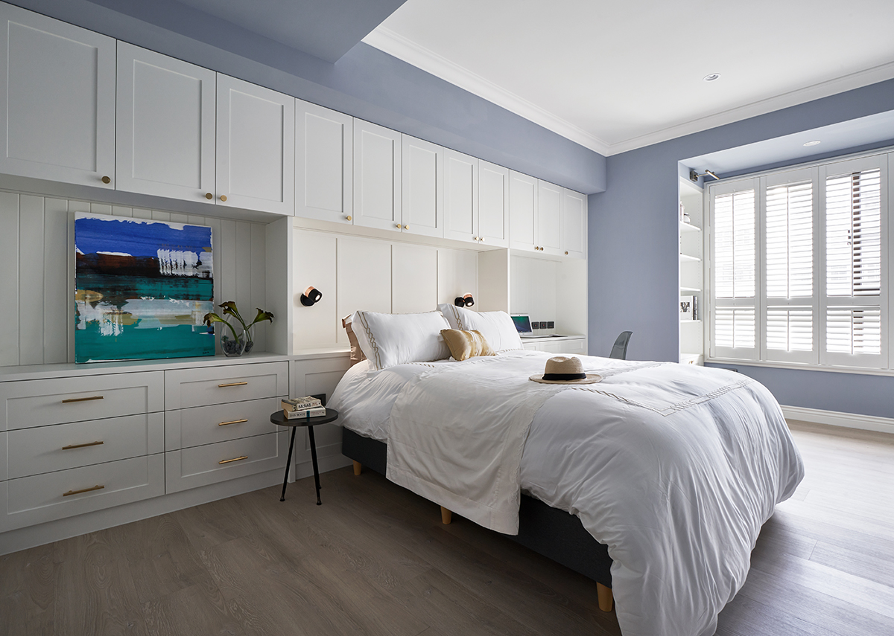
同步從柱身拓增一道開放格櫃，使畸零角落發揮最大坪效，將全室立面覆罩一層霧灰藍色調，以低明度調和柔潤光暈，也深刻了簡白線板的優柔身段，逐步圍塑起自在放鬆的睡眠情境。
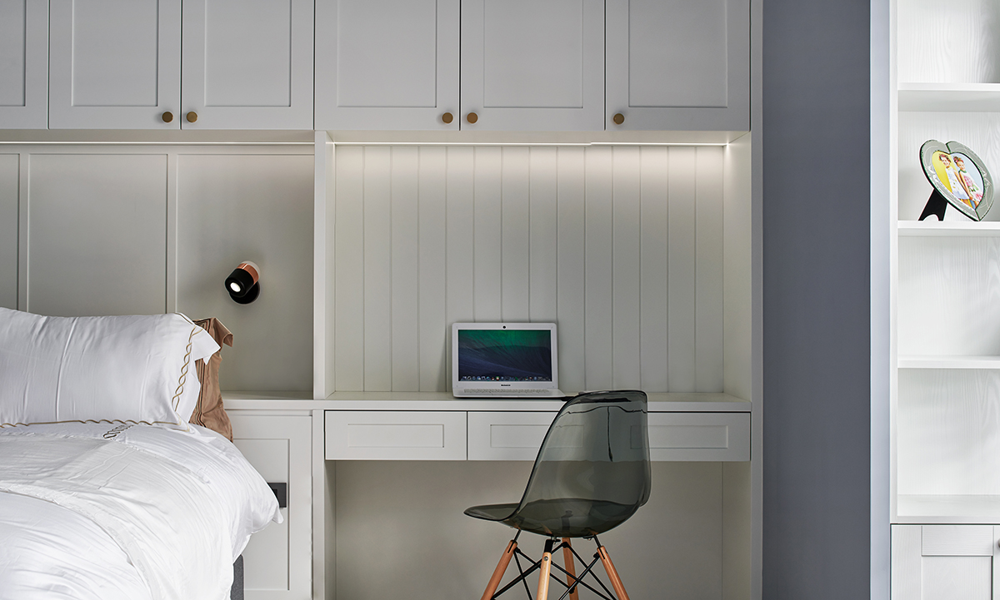
< 總體規劃 >
8. 收納規劃：
依據各場域屬性調配適切收納機能，經由分散式佈局創造流暢拾取動線，如同根據各寢室格局調整櫃體數量，同步妥善運用畸零角落，如從柱身延伸出開放格櫃，以及將臥榻結合收納設計。
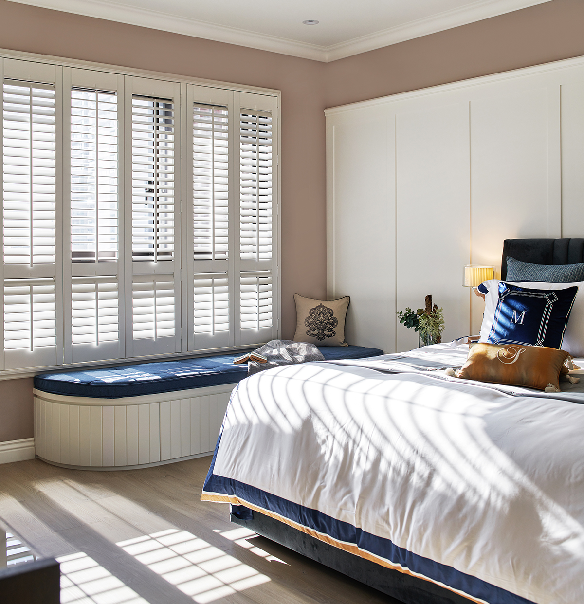
9. 動線規劃：
以開放通透的原則貫穿全室，卸下不必要的實體壁面，採用玻璃敞開穿透明亮視野，並運用經典ㄇ字型飾板門框形成場域界定，同時微幅調整開口角度，以 45 度斜線加強場域連結，使空間感極大化。
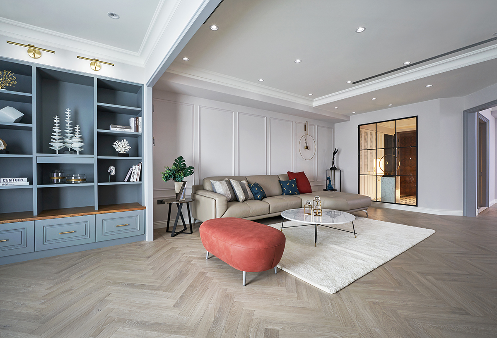
10. 燈光設計：
在燈飾搭配方面，依循美式風格的輕奢調性，從玄關吊燈、餐桌吊燈、客廳壁燈等等，均以簡約線性與金屬材質當作主軸，並採用照畫燈加強局部照明，透過 3000K 暖黃色溫塑造獨有光氛情境。
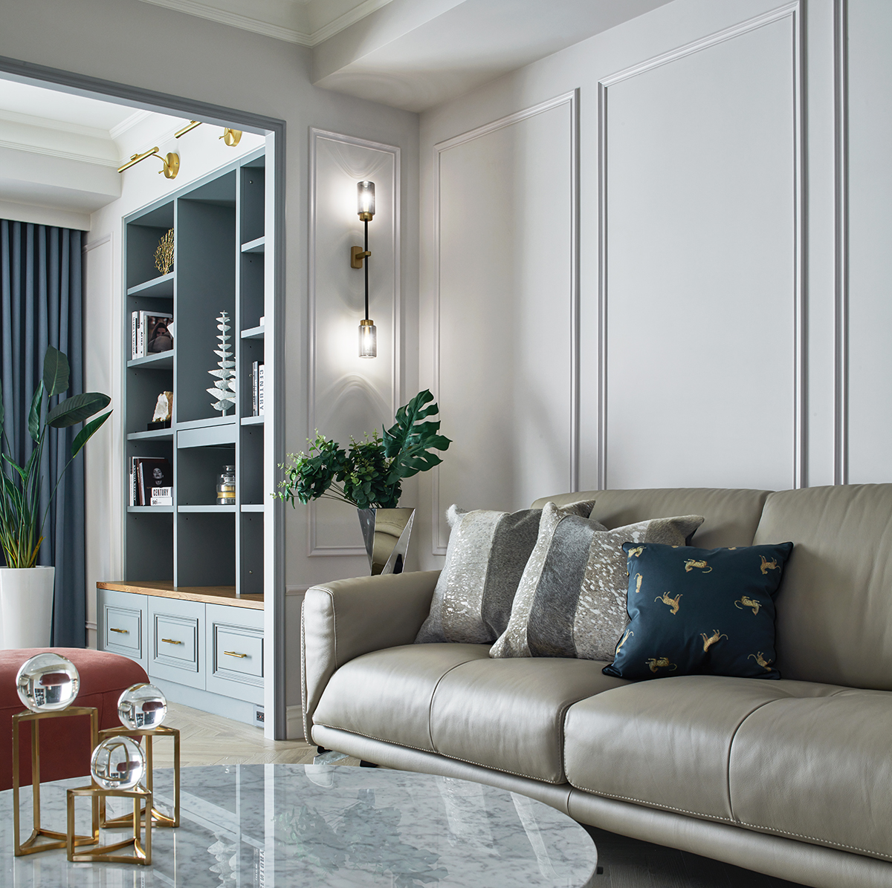
11. 建材挑選：
英式黑白棋盤格磚、西班牙進口花磚、葫蘆磚、實木百葉窗、賽麗石、玻璃、木作
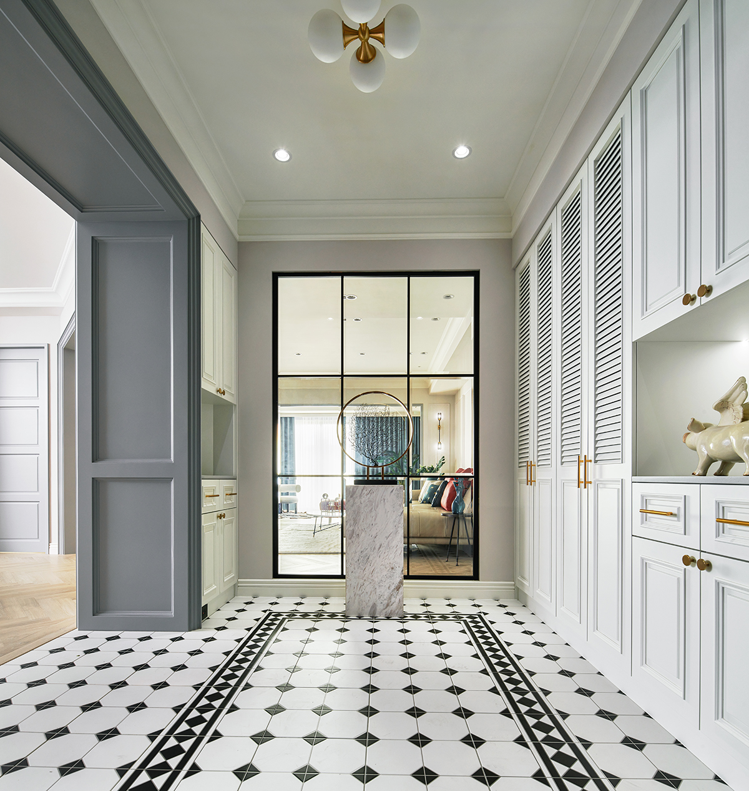
12. 色彩計畫：
「客製化顏色」是本案用色準則，全室以低飽和色調烘托優雅寧謐氛圍，接續依據屋主性格調配顏色，在藍灰基調中摻揉 15% 的紅，使壁面隨著光影濃淡映出不同色澤變化，加上家飾軟件的堆疊點綴，體現美式風格的輕奢雅緻感受。
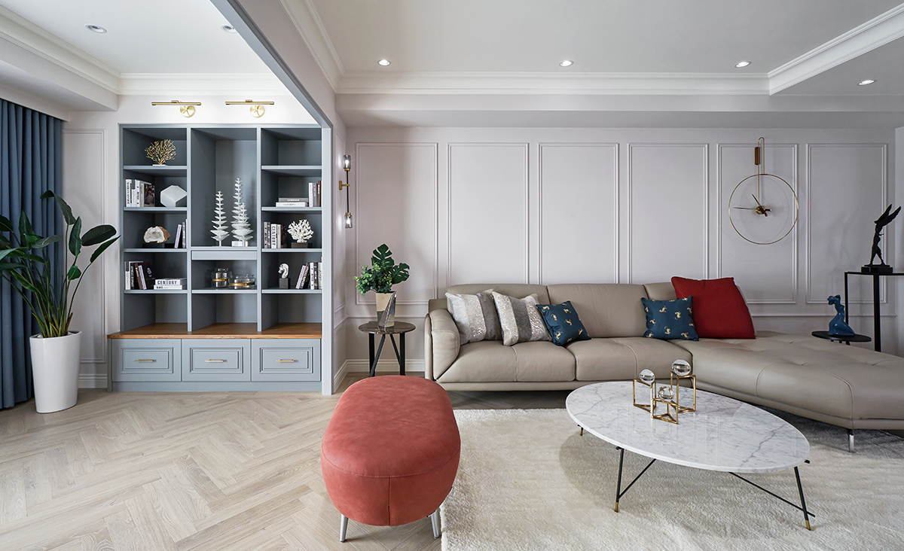